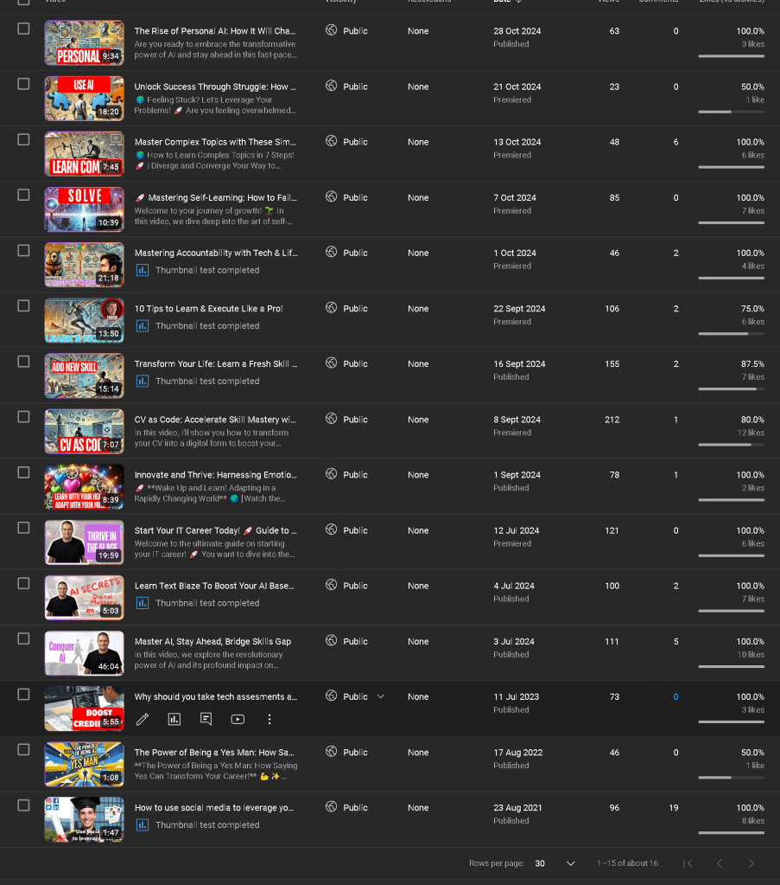

Videos with Higher Engagement (Views & Likes)
Channel > https://www.youtube.com/@RifatErdemSahin

🚀 Video Engagement Analysis: What Makes Some Perform Better Than Others? 💡
In today's digital age, understanding which videos resonate most with viewers can be key to refining content strategies. After analyzing a range of videos, several patterns emerge that show what contributes to high engagement and success.
Videos with Higher Engagement (Views & Likes)
-
Unlock Success Through Struggle: How to Turn Setbacks into Winning Strategies (18:20)
-
Views: 23
-
Likes: 1
-
Key Takeaways:
This video dives deep into personal transformation and overcoming obstacles, making it relatable for a wide audience. The emotional hook of turning adversity into opportunity is powerful, helping to capture the attention of viewers navigating challenges. However, the long-form content might limit its accessibility to all users. ⚡ Why It Works: The universal appeal of personal growth and overcoming struggles creates an emotional connection with viewers. -
Master Complex Topics with These Simple Strategies! (7:45)
-
Views: 48
-
Likes: 6
-
Key Takeaways:
Offering a simple 7-step framework to master complex topics, this video attracts a diverse audience interested in learning. Its wide applicability (from tech to cooking) ensures it resonates with a broad spectrum of viewers, and the shorter format makes it digestible for busy audiences. ⚡ Why It Works: The promise of simplicity and broad applicability appeals to viewers looking for quick, actionable takeaways. -
Mastering Self-Learning: How to Fail, Learn, & Leverage AI for Success! (10:39)
-
Views: 85
-
Likes: 7
-
Key Takeaways:
This video taps into the growing trend of self-improvement and AI usage. By framing failure as a growth opportunity and combining it with AI, it engages viewers passionate about personal development. The call to action and its focus on AI make it highly relevant in today’s tech-driven world. ⚡ Why It Works: The combination of failure as a tool for growth and AI integration resonates deeply with modern audiences seeking to advance their skills.
Videos with Moderate Engagement
-
Mastering Accountability with Tech & Life Lessons: A Groundhog Day Reflection (21:18)
-
Views: 46
-
Likes: 4
-
Key Takeaways:
With a focus on personal accountability and reflecting on life and tech, this video attracts those interested in introspection. However, the longer format and niche appeal (Groundhog Day) may limit its audience reach. ⚡ Why It Works: The personal and reflective tone appeals to those looking for deeper insights, but the length and specificity might deter casual viewers. -
CV as Code: Accelerate Skill Mastery with Hands-On Learning Techniques (7:07)
-
Views: 212
-
Likes: 12
-
Key Takeaways:
A practical guide for career-driven individuals, this video focuses on transforming CVs through code. The hands-on approach and career relevance boost engagement, especially among job seekers and professionals eager to improve their chances in the job market. ⚡ Why It Works: Direct, practical advice for enhancing career prospects attracts a focused audience eager for actionable tips.
Videos with Lower Engagement
-
The Rise of Personal AI: How It Will Change Everything (9:34)
-
Views: 63
-
Likes: 3
-
Key Takeaways:
While personal AI is a hot topic, the video may not resonate with a wide enough audience due to its niche focus on building personal AI systems. The lack of a strong emotional or relatable hook might reduce its broader appeal. ⚡ Why It Doesn't Work: The niche appeal of personal AI and lack of broader emotional connection limit its engagement potential. -
Innovate and Thrive: Harnessing Emotions (8:39)
-
Views: 78
-
Likes: 2
-
Key Takeaways:
Focused more on emotional insights than actionable advice, this video may struggle to keep viewers engaged. Its focus on emotions might not be as universally appealing as videos offering more concrete strategies for growth. ⚡ Why It Doesn't Work: A lack of clear, practical advice can lead to lower engagement, as viewers often seek content with more tangible takeaways. -
Start Your IT Career Today! Guide to Thriving in Tech (19:59)
-
Views: 121
-
Likes: 6
-
Key Takeaways:
While tech career advice is highly relevant, the long format and abstract introduction ("Are we living in a simulation?") may distract viewers from the core message. It may appeal to a broader audience but not necessarily to those seeking specific, actionable career guidance. ⚡ Why It Doesn't Work: A distracted focus and lengthy content could be deterrents for viewers looking for a more streamlined and specific guide.
Key Factors for Success
-
Engagement with Practical and Relatable Topics
Videos offering actionable advice (e.g., learning strategies, personal growth, career tips) tend to garner more views and likes, as they directly meet the needs of viewers looking for solutions. -
Video Length and Format
Shorter videos (under 15 minutes) perform better as they’re easier to digest, while longer videos require more investment of time and commitment from the viewer. -
Audience Relevance and Emotional Appeal
Videos that resonate on an emotional level—especially those that involve personal stories, growth, and overcoming struggles—tend to see higher engagement. -
Specificity of the Topic
Niche topics can struggle unless they offer broad applications or a highly engaging hook. Videos targeting general themes, such as personal development or practical learning, often perform better due to their wider appeal.
🔗 Connect with me:
-
💼 LinkedIn: https://www.linkedin.com/in/rifaterdemsahin/
-
🐦 Twitter: https://x.com/rifaterdemsahin
-
🎥 YouTube: https://www.youtube.com/@RifatErdemSahin
-
💻 GitHub: https://github.com/rifaterdemsahin
Imported from rifaterdemsahin.com · 2024